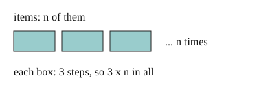

Part of Counting Loop Steps. Answer in the chat (1: ..., g: c), add sure or guess after any answer, and say done when finished.
Last time: a body of 3 steps runs once per item, over n items. How many steps in all? You said b) n. It is c) 3n.

To compare two pieces of code, you want a count that does not depend on the machine. Count passes, then steps per pass, and multiply: n passes of 3 steps is 3n (notes 3). For big-O, drop the fixed factor: 3n is O(n). A range(a, b) loop makes b - a passes (notes 1).
Q1. How many times does the body of for i in range(4, 20): run?
16
Q2. A loop for x in items: has 2 steps in its body, and items holds n things. How many steps in all, and what is its big-O?
Q3. Lee says for i in range(0, n, 2): with a 1-step body is O(n/2), so it beats O(n). What is wrong?
How many times does the inner line run?
for i in range(3):
for j in range(4):
print(i, j)